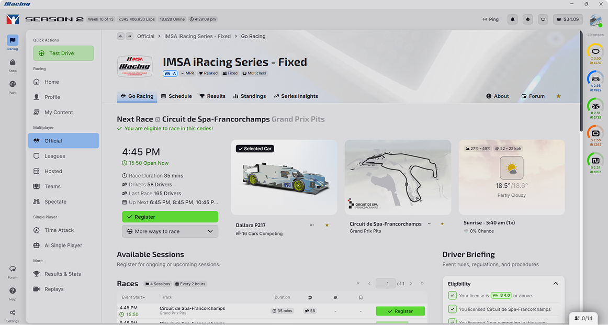
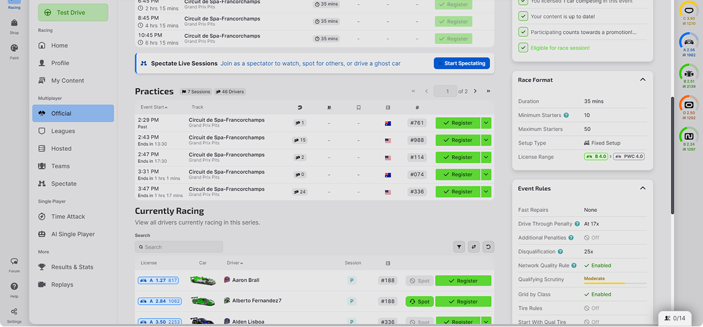
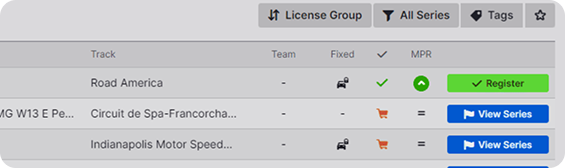
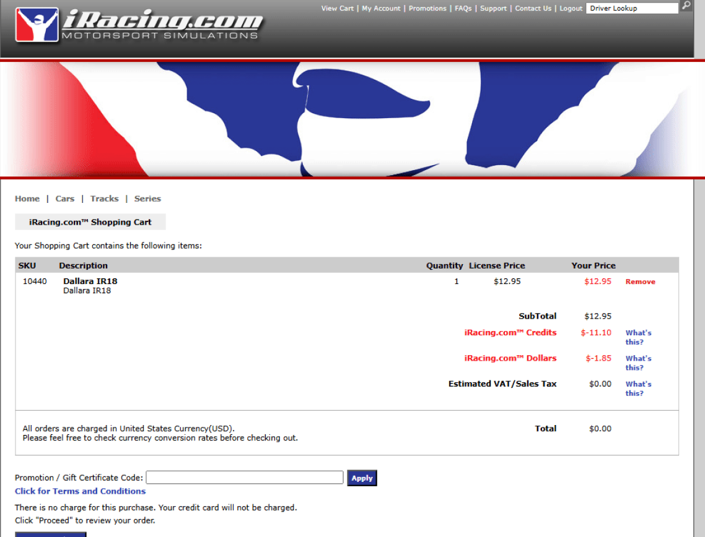
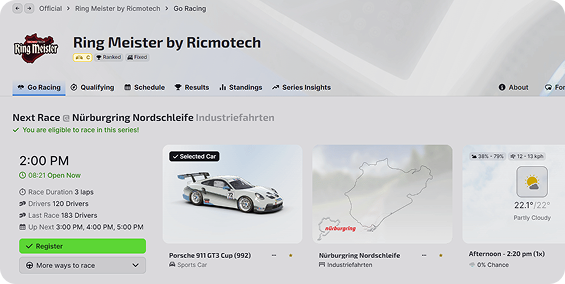
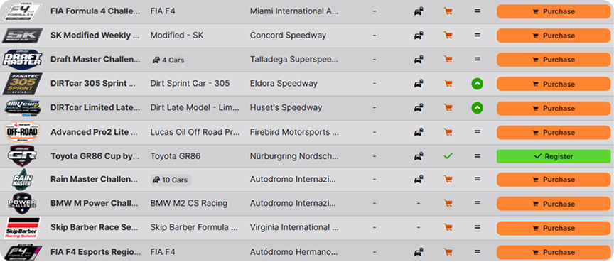

Heuristic Evaluations
Starting cheap
 Go to Surveys
Go to SurveysUser control and freedom
 Users can’t back out of launching the simulator. Once they confirm the action, they have no choice but to wait for it to load and then close it.
Users can’t back out of launching the simulator. Once they confirm the action, they have no choice but to wait for it to load and then close it.
 A “cancel” button should be added or replace the “close” button.
A “cancel” button should be added or replace the “close” button.
 Consistency and Standards
Consistency and Standards
Purchases and the cart are handled on an external website.
There should be a cart icon button in the top-right corner of the screen with a number badge when products are added.
 Aesthetic and minimalist design
Aesthetic and minimalist design


A competition’s details can be overwhelming. The information shown constantly competes with itself.
I would remove the “Races” and “Currently racing” tables and redesign the controls, or the way available cars are chosen and shown. I would move the “driver briefing” section to a separate “Rules and Format” tab.
Surveys
Getting to know the user
 Go to Heuristic Evaluations
Go to Heuristic EvaluationsGoals
11 users
 81111
81111


Results
Finding and registering for a race
“It’s hard to sort series by different disciplines and having to add tags so you only see what you CAN race and not EVERYTHING is not intuitive for a new user”
“I’d put the emphasis on showing users which series help them move up a license”
“It would be nice if rookies were only shown, by default, the races they can take part in”
 Series details
Series details
“Too much unnecessary data for the average user”
“I’d remove almost all the information that isn’t relevant to the race or practice you’re about to join”
“A popular complaint I see, but the way the car images are laid out in multiclass or multi manufacturer races”
The shopping cart
“There should be more information about the different discounts”
“Make it more modern and let you do it from inside the app you race in, without having to go to the website.”
Validated Hypotheses
Series details
This section is overwhelming. Although it contains important information, it can be rearranged to reduce cognitive load.
The shopping cart
The shopping cart should be inside the platform, not on an external website.
 The race list
The race list
Improving the filters and race information would reduce new users’ frustration and drop-off.
Journey Map
The sim racer’s journey
Focus
Sergio Barrientos
33 years old
Systems Analyst
PC and phone
What he wants to do on the platform
- Buy a car
- Join a race
How he’d like to do it
- A quick and easy purchase
- Easily find the next race he can take part in.
Hypothetical Scenario
1Sergio wants to get into sim racing and signs up for iRacing.
2He downloads and opens the iRacing platform to look for a race.
3After searching the race menu using filters and tags, he realizes he needs to buy a car.
4He buys a car outside the platform
5He marks the car as a favorite, searches for the race again and registers.
Experience
1Open the UI and log in

1. Opens the UI and logs in.
2. Goes to the race list to register for a race.
He feels dizzy from the visual overload of the race list and gets confused because he can’t find a race that’s about to start, that he can enter and that helps him progress.
2Find a race

3. Goes to the race table and uses the filters to narrow the search.
4. Looks at the results.
5. Selects a race to see its details.
3Buy the car

6. Starts buying the required car.
7. Opens the web browser and adds the car to the cart.
He gets frustrated seeing that the cart is on iRacing’s old website.
8. Checks the purchase summary before paying.
9. Enters his card details and presses accept.
10. Receives a confirmation email
11. Downloads the content
4Register for the race

12. Finds the same race and opens the details
13. Checks the schedule and chooses the car he bought to race
He marks the car he bought as a favorite. He clicks “Register” and is asked to choose a car to race. It annoys him to have to pick the same car he already selected as a favorite.
14. After registering, he launches the simulator.
Findings and solutions
The first time
A new user has no idea:
- Where to start
- Why there are so many races
- Why they can’t take part in all of them
- How the fixed schedule works
Solution
A new License Progress view to help beginners progress their accounts and unlock more content.
Race details

Problems
- Hard to see which cars to choose from
- Too much information (rules, formats, 3 tables, all at once)
Solutions
- A new tab for the “Cars” section
- Information rearranged and summarized in 2 tables
Race list


Problem
- Users can’t tell at a glance what they need to buy to take part
Solution
- Car and/or track name in Cart Orange
Shopping cart


Problem
- The cart is outside the platform, on the website
Solution
- Redesign the cart inside the platform.
Lean UX Canvas
Thinking about the business
Business Problem
iRacing offers a sim racing service that its competitors envy, and it depends on how much the community takes part. The key to keeping that participation is making sure users don’t leave the service for one reason or another.
User Archetypes
Users aged 20 to 50 with enough purchasing power who enjoy motorsport and want to get into sim racing.
Sergio is 37. He is very passionate about motorsport. In his free time he loves watching F1 weekends, movies and TV shows, listening to music and racing in the different simulators on the market.
He uses iRacing to compete and set himself a bigger challenge: improving his driver iRating and raising his license so he can race better cars on the best tracks.
Solutions
- A new License Progress view to help beginners progress their accounts and unlock more content.
- A new “Cars” section and rearranged information
- Add a cart icon button in the top-right corner, next to the profile, to reach the cart after adding products.
- Process payments inside the platform and redesign the same steps from the website.
- Remove some unnecessary columns from the race table to add the selected favorite car.
- Color the names of the cars and tracks that need to be bought, to show users what they DON’T have.
- Replace the “register” button with a menu button that offers options currently only available in the details.
Business Outcomes
- Increase new-user retention by 20% within 3 months
- Increase the shopping cart’s Average Order Value by 40%
User Outcomes
- Make purchases without leaving the platform.
- Search for and find races faster.
- Register for a race faster.
- A practical guide to moving up licenses.
Hypotheses
We believe new-user retention will increase if the most important filters and tags are left on and made more visible on screen.
We can increase the Average Order Value by bringing the cart and the website’s checkout flow into the UI.
We can improve the average user’s experience by adjusting the information shown in the series details and letting users register for races with their selected favorite car.
Next UX element
But there are also...